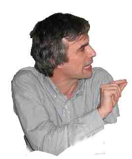

Species, speciation and
related topics
Photo courtesy Prof. Anthony Mallet

Darwin's species
concept
Scientific papers
- Gourbière,
S. & Mallet, J. (2010). Are species real? The shape of the species boundary. Evolution
64: 1-24
- Mallet,
J. (2008). Hybridization, ecological races, and species: empirical evidence
for the ease of speciation. Phil. Trans. Roy. Soc. B 363: 2971–2986
- Mallet,
J. (2010). Group selection and the biological species concept. Phil. Trans.
Roy Soc. B 365: 1853-1863
- Mallet,
J. (2006). Species concepts. In Fox, C.& Wolf, J.: Evolutionary Genetics:
Concepts and Case Studies. OUP, Oxford, pp. 367-373
- Subspecies, semispecies,
superspecies (2006) Article for Encyclopaedia of Biodiversity
- Mallet,
J. (2007). Species, concepts of. In Levin, S.A.: Encyclopedia of Biodiversity. Elsevier,
Oxford. Online update, pp. 1-15.
- Taxonomic
inflation as a result of species concept change (2004)
- Host
races in plant-feeding insects and sympatric speciation. Michele Drès
& J. Mallet
(2002)
- The
speciation revolution (2001)
- Bimodal
hybrid zones & speciation: Chris Jiggins & J. Mallet (2000)
- A
species definition for the modern synthesis (species as genotypic clusters):
J. Mallet (1995)
Hybridization
See also:
Research on host races in Zeiraphera
See also: Portraits and quotations for historical views of species
Back
to J. Mallet home page
Last updated: 27 May 2010